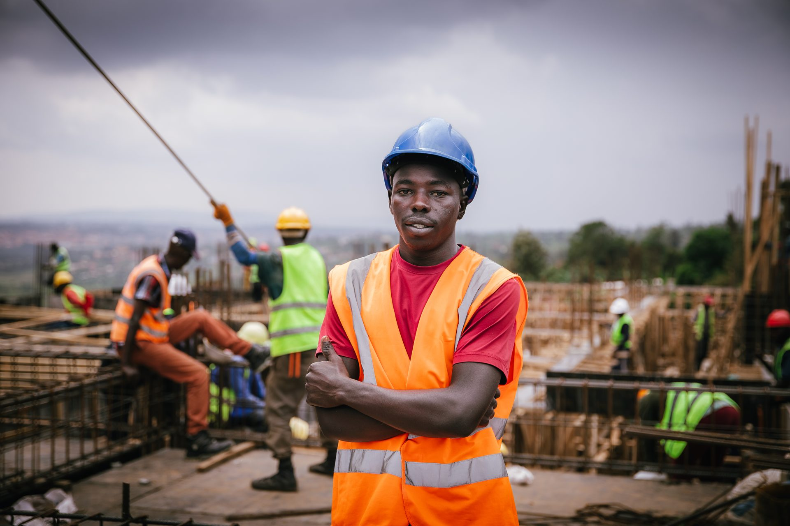
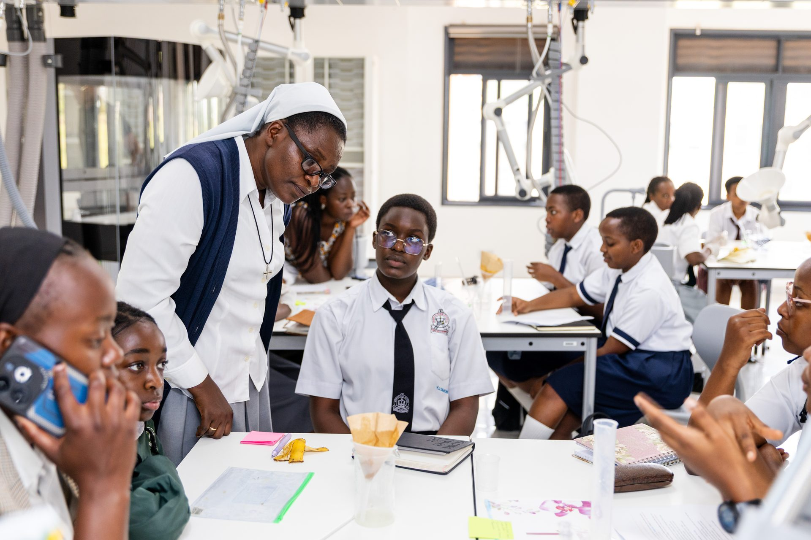
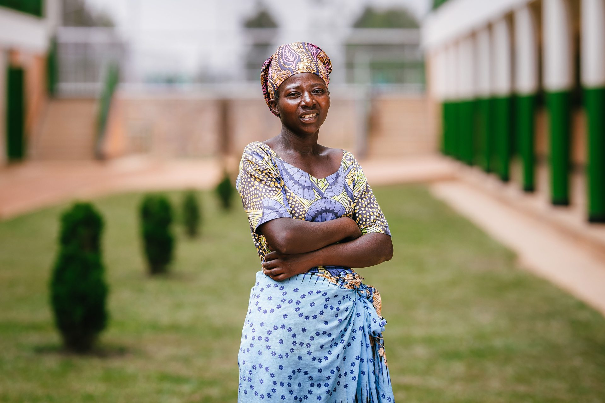
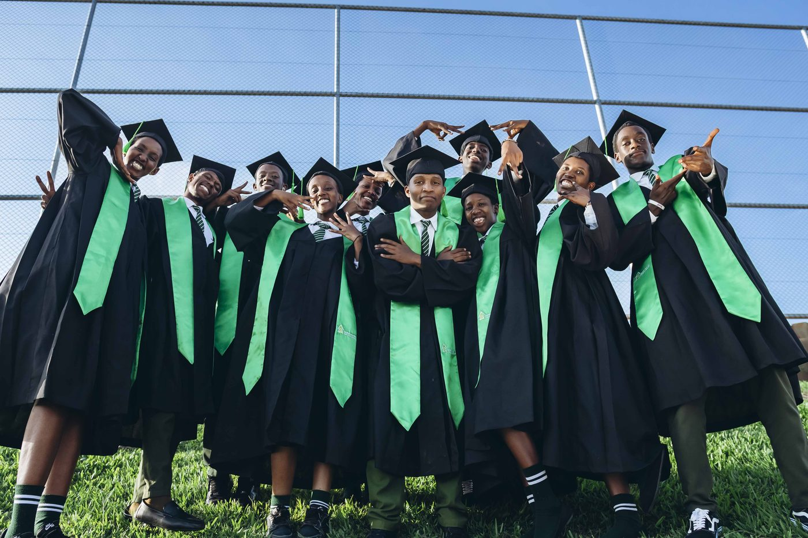
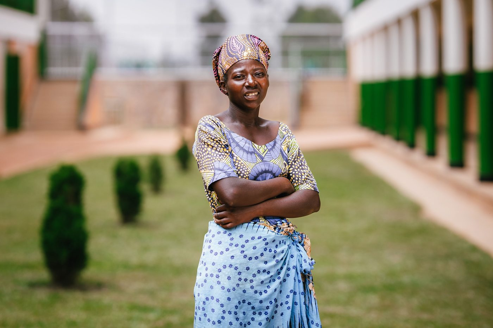
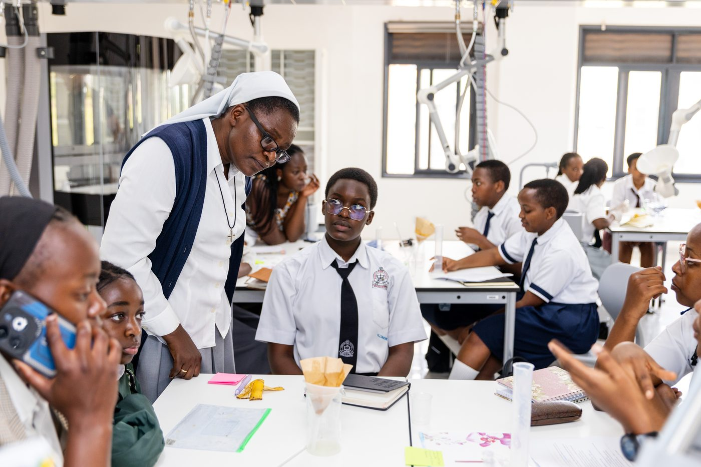
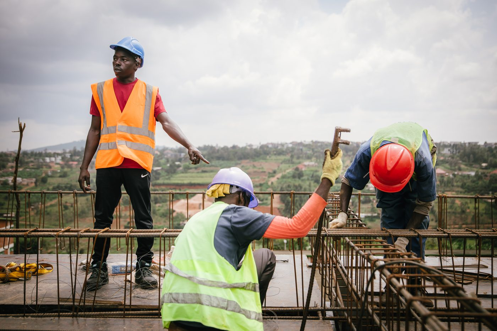
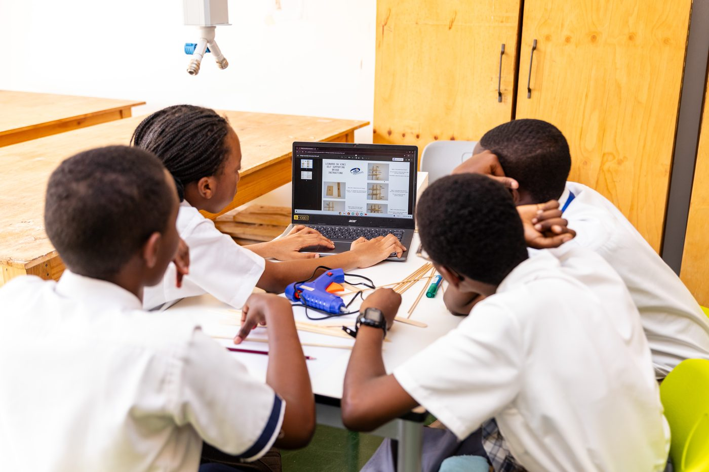
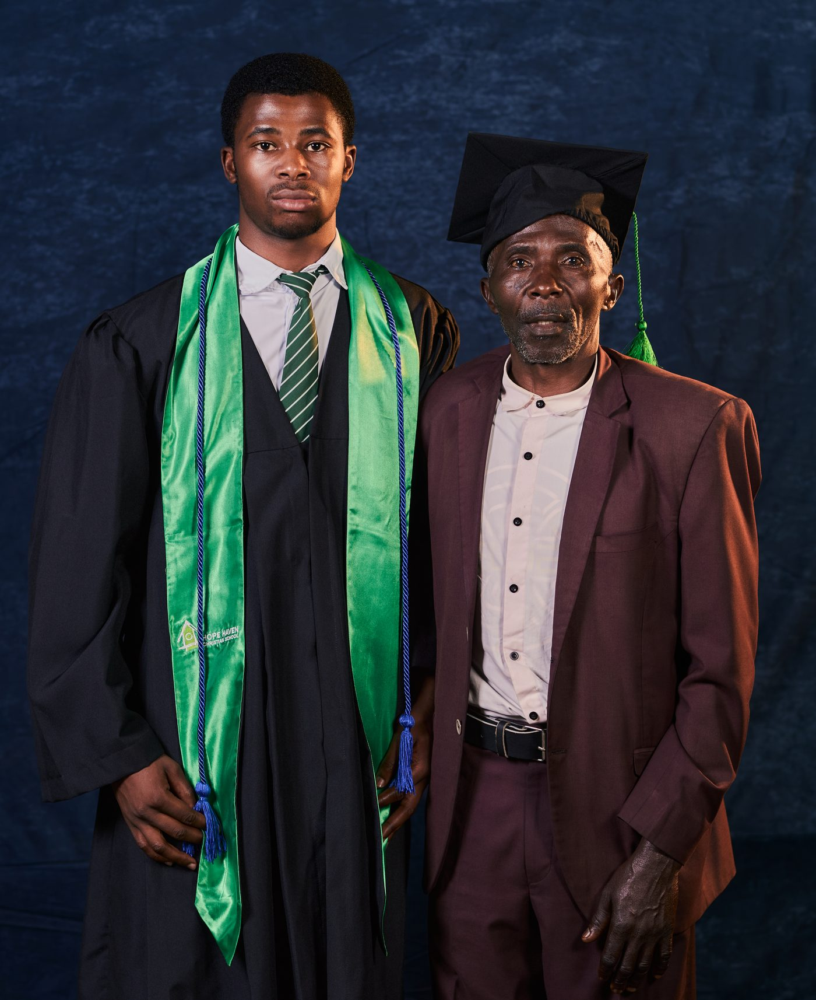
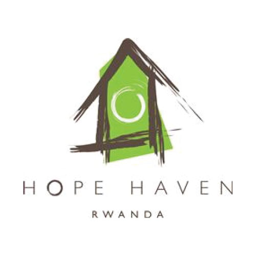

0+
Mission-driven partnerships
NGOs, schools and social enterprises.
Strategy, storytelling, design and production—working as an extension of your team from first idea to final delivery.



Qrate keeps strategy, field production, design and reporting connected—so the story stays clear from the first brief to final delivery.
NGOs, schools and social enterprises.
Strategy, stories and assets brought together.
Strategy, production, design and reporting.
Rwanda, Tanzania, Uganda and Kenya.
Every engagement has a clear beginning, a considered middle and a useful finish—with your team involved at the moments that matter.
We listen closely, map the audience and define what the creative work needs to make possible.
We bring the message, format, team and production rhythm into one practical creative plan.
We produce the work, share clear review points and deliver every asset ready for your team to use.

Photography · Field production

Film · Editorial development

Campaign design · Social content

Editorial design · Data storytelling

Portraiture · Story development

Editing · Content delivery
 iDebate Rwanda
iDebate Rwanda Starlight Africa
Starlight Africa
Hope Haven Rwanda New Vision Vet Hospital
New Vision Vet Hospital Ntare Louisenlund School
Ntare Louisenlund School Let There Be Light Int’l
Let There Be Light Int’l Shine on Rwanda
Shine on Rwanda Soma SalamaiDebate RwandaStarlight AfricaNew Vision Vet HospitalNtare Louisenlund SchoolLet There Be Light Int’lShine on RwandaSoma Salama
Soma SalamaiDebate RwandaStarlight AfricaNew Vision Vet HospitalNtare Louisenlund SchoolLet There Be Light Int’lShine on RwandaSoma SalamaQrate understands our donor audience. Every piece is built around what actually moves supporters to give.
Same-day turnaround changed how we communicate with parents and partners. Non-negotiable now.
They hold dignity as a standard, not a talking point. Our stories are handled with real respect.
Strategy, storytelling, design and production—working alongside your team from first idea to final delivery.